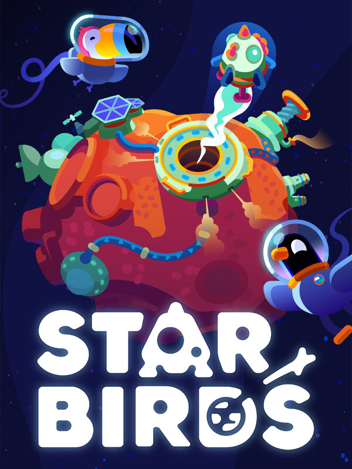

Star Birds
Star Birds
Details
|  | |
| Playtime | 1m 0s |
| Last Activity | 2025-09-14 23:08:39 |
| Added | 2025-09-08 16:50:03 |
| Modified | 2025-09-08 16:50:28 |
| Completion Status | Played |
| Library | Steam |
| Source | Steam |
| Platform | |
| Release Date | |
| Community Score | |
| Critic Score | |
| User Score | |
| Genre | Indie Simulator Strategy |
| Developer | Toukana Interactive |
| Publisher | Toukana Interactive |
| Feature | Single Player |
| Links | Uknown Uknown Uknown Uknown Uknown Uknown Uknown Uknown |
| Tag | |
Description
Star Birds is a relaxing asteroid base-building and resource management game where you help your population of spacefaring birds prosper and thrive. No matter if you're a genre veteran or want to get a foot into an oftentimes overwhelming space: the Star Birds will be happy to have you by their side. And not just because chaos would ensue very quickly without you.

Scan and claim nearby asteroids to mine resources ranging from ice and metals to rather obscure things. Build production facilities and automate the manufacturing of increasingly advanced goods. Deliver products to your space station to fulfill quests that satisfy the needs of your birds, however odd these might be. Establish transportation routes to create a bustling cosmic production network, advance your technology and ultimately take off to foreign star systems to pursue the mysteries of your galaxy!

360° Base Building
Place buildings on procedurally generated asteroids and build your own little worlds floating in space. Use each asteroid's unique shape and available surface to create the perfect production network. Take the role of a cosmic pioneer and strategically place and connect production facilities with hand-drawn-pipes to optimize your resource flow.
Explore and Experiment
Gather resources and explore different ways to transform and combine them into a variety of goods you're going to need for your mission. Investigate the asteroid's surface, overcome unforeseen obstacles and excavate mysterious artifacts.
Missions and Mysteries
Follow strange traces and lead your crew to uncover a big secret awaiting you in the far reaches of your galaxy. Explore and master the oddities of foreign star systems to conclude this adventurous journey.
Automate and Admire
Establish an ever-growing network of production chains throughout your star system. Improve and optimize, or sit back and watch the satisfying rhythm of your bustling space factory.
Collect and Complete
Fill your collection with all the things you find on your journey! Take on bonus challenges and earn shiny medals for perfecting your setup.
Set out for the stars!
Upgrade your space station and research advanced technologies. Unlock new production paths and increase their efficiency to start your journey into the unknown depths of space and uncover its mysteries!
✅ What Star Birds offers ✅
360° building on asteroids ranging from space potato to various easter eggs
resource gathering & management mechanics
a vibrant art style inspired by kurzgesagt videos (and lots of birds, of course)
a mysterious campaign and story with kurzgesagt vibes
resources & production processes inspired by real science
high replayability on countless procedurally generated asteroids
intuitive and satisfying game mechanics
a unique and colorful journey through outer space
a magpie's nest full of shiny achievements
❌ What Star Birds doesn't offer ❌
bird-perspective roleplaying gameplay
multiplayer features or BvB (bird vs bird)
4X strategy gameplay
realistic simulation and physics (the birds are going through enough in our videos)

Star Birds is made by Toukana Interactive, creators of Dorfromantik, and the curiosity sparking animation studio kurzgesagt – in a nutshell. A match made in space, but also in Germany. With each side extending the other a wing, this collaboration has gone from bad puns about fruit to creating a colorful space mining operation that we're proud to send our birds on.
Speaking of: No birds were harmed in the creation of this game, we promise!